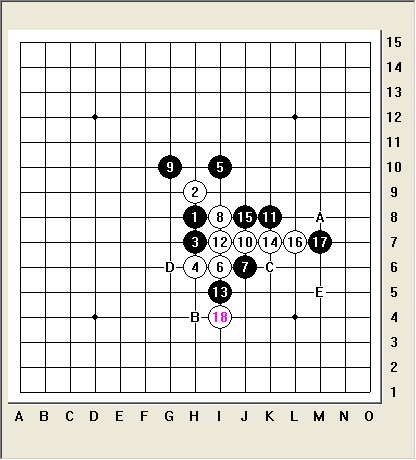

比较无聊.发个容易思考的局面
#1 比较无聊.发个容易思考的局面作者：岑小鱼 发表时间：2011-4-8 19:59:52

这几天溜达中看见几次这个局面.黑方如果不小心选择了C点防御.
白方自然占据D点取得局部优势. 然后黑方在上面的攻击
无法VCT取胜而最终白方确立优势.
黑19为何不选择A点呢? 私下猜测是怕白方跟着走B点做V
的缘故? 实际上如果白选择那样走则黑有E点先手反四
的妙手! 因此黑19-A点立刻取得先手同时加强了自身的力量
=======上图对应的爱五子棋谱代码如下，以便你拆解：========
h8h9h7h6i10i6j6i8g10j7k8i7i5k7j8l7m7i4m8l8l9h4m5l5k6l4l6j4k4g5
======================================================
黑21不能过于着急.因为白有做禁的手段导致黑方的反先不成立
=======上图对应的爱五子棋谱代码如下，以便你拆解：========
h8h9h7h6i10i6j6i8g10j7k8i7i5k7j8l7m7i4m8l8l5j10h11
======================================================
如图完全封住白方的棋.同时继续加强自身的力量取胜.
［ lfzxdh 于 2011-4-9 9:15:54 时花20金币送鲜花一朵］
［ 维尔斯特拉斯 于 2011-4-9 10:45:14 时花20金币送鲜花一朵］
［ 圊籽 于 2011-4-10 12:14:53 时花20金币送鲜花一朵］
［ 中中 于 2011-4-30 3:35:25 时花20金币送鲜花一朵］